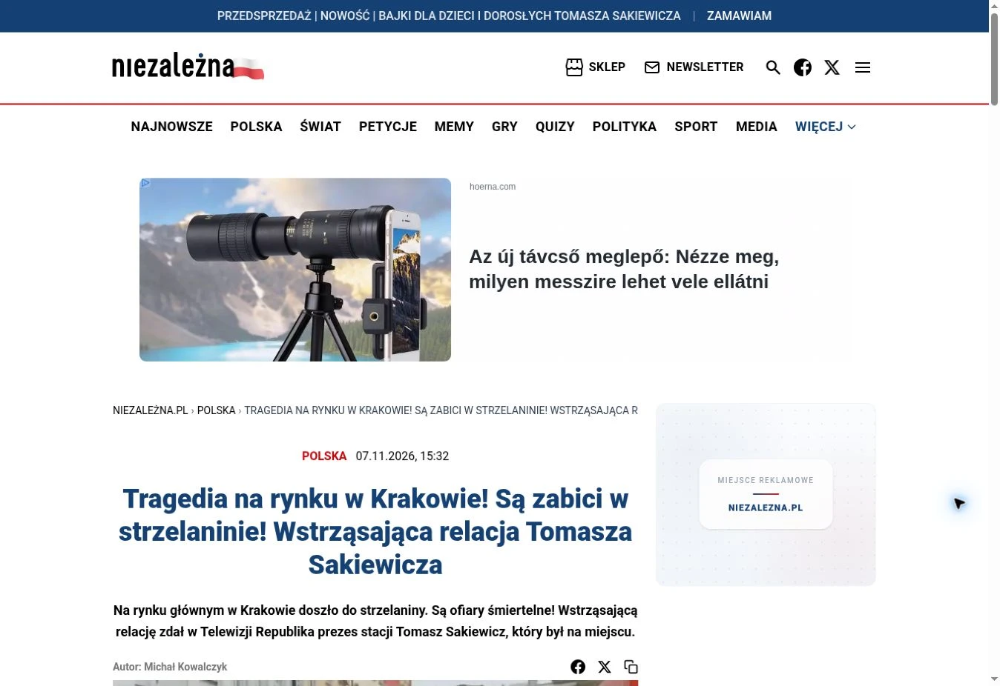
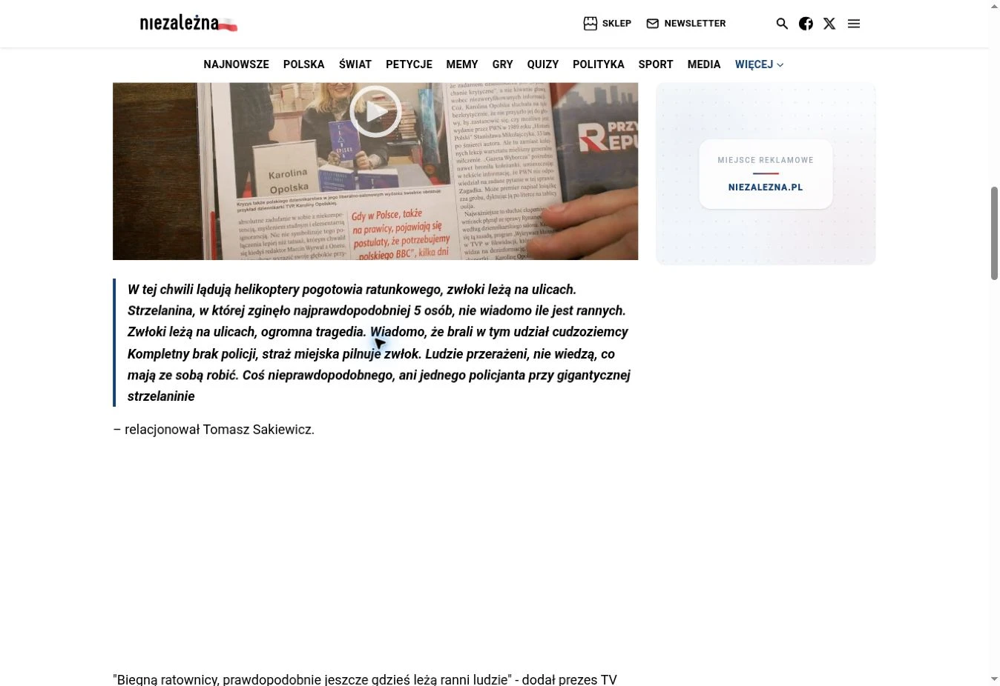
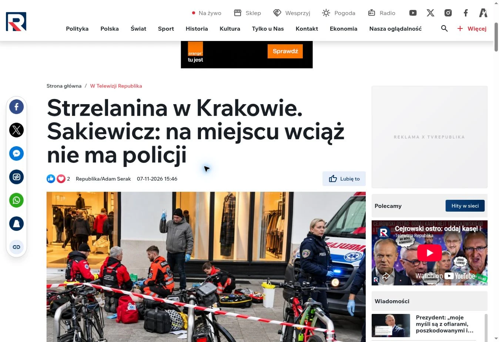
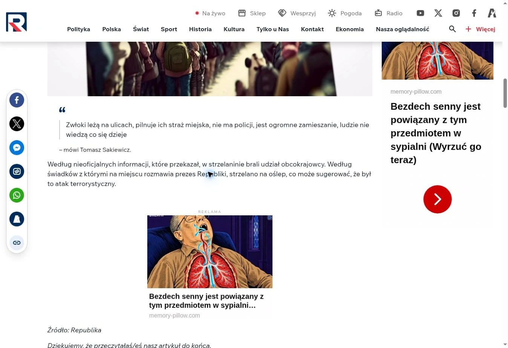

Текущий статус
Заявление доставлено
Доставка подтверждена квитанцией e-Doręczenia. На указанную ниже дату автор не получил сведений о номере дела или решении о возбуждении производства.
- Получатель
- Окружная прокуратура в Варшаве
- По состоянию на
Обновления по электронной почте
Когда появятся новые сведения о рассмотрении заявления, вы получите краткое резюме и ссылки на обновления. Форма откроется в beehiiv. Подписку нужно подтвердить по ссылке в письме, а отписаться можно в любой момент.
Хронология
-
Доставка заявления
Система e-Doręczenia зафиксировала получение заявления прокуратурой в 18:23:51.
-
Отправка заявления
Заявление отправили через e-Doręczenia в 18:23:49 вместе с четырьмя снимками экрана.
Чего касается заявление
Niezalezna.pl приписала Сакевичу утверждение об участии иностранцев в стрельбе. TV Republika назвала эту информацию неофициальной. Позднее в прямой трансляции Onet полиция сообщила, что задержанный был гражданином Польши и единственным известным нападавшим.
Автор попросил сохранить полный фрагмент эфира и проверить, есть ли в высказывании признаки преступления по ст. 256 § 1 Уголовного кодекса Польши. Оценку дают компетентные органы.
Материалы для СМИ
- Текст заявления (транскрипция на польском)
- Выписка из квитанций e-Doręczenia (на польском)
- Публичная запись автора на r/Polska
Публикации, указанные в заявлении
Снимки экрана, отправленные вместе с заявлением







